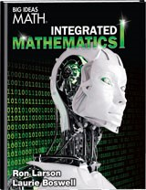
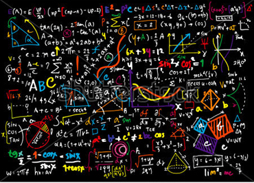

|
Integrate Math 1 course will help you learn how to use algebra, geometry, and data analysis to solve problems. Each lesson builds on what you have already learned. As you participate in classroom activities and use the workbook provided, you will master important concepts that will prepare you for the Smarter Balanced Test and your next Mathematics course.
Integrated Math I is designed as an enhancement course for topics in secondary mathematics education. Topics introduced in Integrated Math provide the foundation students require for future success in high school mathematics, critical thinking, and problem solving.
The primary goal in Integrated Math is to help students develop more concrete mathematical knowledge and apply this knowledge to applications represented in assessment tests. In addition, the curriculum of Integrated Math will mimic and reinforce many of the topics students will see in their Algebra I and Geometry studies at the secondary level.
Integrated Math I topics include recognizing and developing patterns using tables, graphs and equations. Mathematical modeling is stressed as a methodology for approaching the solution to problems. Students will explore operations on algebraic expressions, and apply mathematical properties to algebraic equations. Students will problem solve using equations, graphs and tables and investigate linear relationships, including comparing and contrasting options and decision-making using algebraic models. Reinforcement of topics from two-dimensional Geometry is integrated into this curriculum. This includes applications from the areas of area and perimeter, the Pythagorean Theorem and its applications, as well as geometric proportion.
Finally, introductory instruction in the area of mathematical probability is provided to reinforce use of fractions and numerical modeling. Technology will be used to introduce and expand upon the areas of study listed above.
Students should have B or higher in Math Honors. This course covers the concept in Math 1 in greater depth as well as several Pre-Calculus and Integrated Math 2 topics. Integrated Math 1 Honors is an accelerated and challenging course designed for students who excel in Math.
Students entering integrated Math 1 Honors should easily grasp higher level concepts and embrace rigorous curriculum. Student's Lean concepts such as:
- Solving and Understanding equations and inequalities as a process of reasoning
- Understanding the concepts of a function
- Interpreting functions given graphically, numerically, symbolically and verbally.
- Understanding when the context allows for a model that is only an approximation.
- Solving problems about triangles, quadrilaterals and other polygons. Etc.
Three years of college-preparatory mathematics that include the topics covered in elementary and advanced algebra and two-and three-dimensional geometry required to get into UC/California State Universities.
|


|